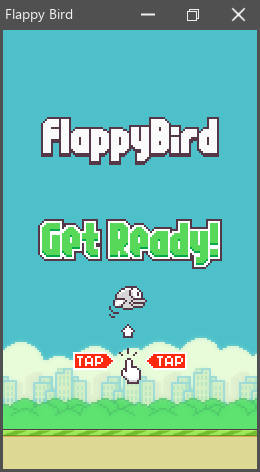

This single-file script implements a small Flappy Bird game with the standard GUI, Pixel, Core, and Audio modules. From the repository root, run:
swc bin/examples/scripts/flappy.swgs
The walkthrough focuses on how a complete script is assembled: module imports, compile-time configuration, lifecycle hooks, events, painting, audio, owned collections, and asset loading. Read the language tour first if the syntax is new.
Note
This page is generated directly from the executable source. Documentation and program therefore use the same revision.
Dependencies
Module setup directives normally live in module.swg. A standalone script has no separate setup file, so it places those directives before ordinary source:
- #import establishes a compiled module dependency;
- #load adds another source file to the same script module;
- a top-level #run block updates the script build configuration.
Flappy imports gui for the application and window layer, and audio for playback. Their transitive dependencies provide Core utilities and Pixel drawing, but application code should still import every module it uses directly when it owns a normal workspace module.
// 'swag@std' resolves 'gui' from the standard workspace under SWAG_PATH.
#import("gui", location: "swag@std")
// Import Audio from the same standard workspace.
#import("audio", location: "swag@std")
// This optional setup block runs before the rest of the script is compiled.
#run
{
// Obtain the compiler interface and this script's mutable build configuration.
let itf = @compiler
let cfg = itf.getBuildCfg()!
// Keep runtime safety guards outside release builds.
#static if #cfg == "release" do
cfg.safetyGuards = Swag.SafetyWhat.None
else do
cfg.safetyGuards = Swag.SafetyWhat.All
}
Semicolons are optional. This script follows the canonical formatter and omits them.
Each standard module exposes its API in a namespace. File-scope using declarations make the frequently used Core, Pixel, and Gui names available without a prefix. Audio remains qualified so sound operations stay visible at their call sites.
using Core, Pixel, Gui
Entry point
The #main hook is the entry point for an executable or script. In script mode, swc compiles the hook and calls it through the JIT.
Note
Global declaration order does not affect name resolution. #main can call onEvent before its declaration later in the file.
#main
{
// Start the process-wide audio engine. 'expect' turns failure into a panic.
expect Audio.createEngine()
// Destroy the engine when '#main' leaves, including through an early exit.
defer Audio.destroyEngine()
// Create one application surface and dispatch its events to 'onEvent'.
// A smoke run exits after a bounded frame count,
// which keeps automated example tests non-interactive.
Application.runSurface(100, 100, 254, 481, title: "Flappy Bird", hook: &onEvent)
}
Global definitions
Constants
const declares compile-time values. The compiler infers their types from the initializers; the comments below call out the two default literal types used by this script.
const Gravity = 2.5 // An unsuffixed decimal literal defaults to 'f32'.
const GroundHeight = 40.0
const SpeedHorz = 100.0
const BirdImpulseY = 350 // An unsuffixed integer literal defaults to 's32'.
Variables
var g_Bird: Bird // 'Bird' is declared later; global order does not matter.
g_Pipes owns a growable Core array of Pipe values. Swag writes the generic argument with an apostrophe: Array'Pipe. The file-scope 'using Core' avoids the fully qualified Core.Array'Pipe.
var g_Pipes: Array'Pipe
Math is a namespace inside Core. Keeping the prefix makes geometry and numeric helpers recognizable without importing every Math name.
var g_Rect: Math.Rectangle
These global scalars use their type defaults: zero for numbers and false for booleans.
var g_Dt: f32
var g_Time: f32
var g_BasePos: f32
var g_Score: s32
var g_GameOver: bool
var g_Start: bool
The initializer makes the type of g_FirstStart unambiguously bool.
var g_FirstStart = true
// Texture assets
var g_DigitTexture: [10] Texture // Ten score-digit textures.
var g_BirdTexture: [3] Texture // Three wing animation frames.
var g_BackTexture: Texture
var g_OverTexture: Texture
var g_BaseTexture: Texture
var g_PipeTextureU: Texture
var g_PipeTextureD: Texture
var g_MsgTexture: Texture
// Sound assets
var g_SoundDie: Audio.SoundFile
var g_SoundScore: Audio.SoundFile
var g_SoundHit: Audio.SoundFile
var g_SoundFlap: Audio.SoundFile
g_Font is a nullable pointer because font creation can return no font. Call sites use ! only after successful asset loading establishes the invariant.
var g_Font: #null *Font
Types
// State for the player sprite.
struct Bird
{
// A fully qualified name remains available despite 'using Core'.
pos: Core.Math.Vector2
// The file-scope 'using Core' allows the shorter Math name.
speed: Math.Vector2
// Fractional animation position; painting wraps it across three textures.
frame: f32
}
// One obstacle pair and its scoring state.
struct Pipe
{
rectUp: Math.Rectangle // Upper obstacle bounds.
rectDown: Math.Rectangle // Lower obstacle bounds.
distToNext: f32 // Horizontal gap before the next pair.
scored: bool // True after the bird passes this pair.
}
The actual code
onEvent receives GUI events for the surface. Pattern cases select the concrete event type and can bind the typed value with as, as the paint case does. A larger application can distribute this work across controls or interfaces; a single callback keeps this example local.
func onEvent(wnd: *Wnd, evt: IEvent)->bool
{
switch evt
{
case CreateEvent:
g_Rect = wnd.clientRect()
// 'loadAssets' can fail. 'expect' converts that recoverable error into a
// panic because the game cannot continue without its assets.
expect loadAssets(wnd)
start()
case ResizeEvent:
g_Rect = wnd.clientRect()
case PaintEvent as paintEvt:
let painter = paintEvt.paintContext.painter
// Elapsed time since the previous frame, in seconds.
g_Dt = wnd.app().deltaSeconds()
input(wnd)
paint(painter)
move()
// Request another paint event to keep the frame loop active.
wnd.invalidate()
}
return false
}
paint draws one frame through the Pixel painter owned by the GUI renderer.
func paint(painter: *Painter)
{
// Preserve the source dimensions when drawing the background at the origin.
painter.drawTexture(0, 0, g_BackTexture)
// Bird
if !g_FirstStart
{
// Save the painter state and restore it automatically when this scope leaves.
painter.pushState()
defer painter.popState()
let trf = painter.transform()
painter.resetTransform()
let speed = Math.clamp(g_Bird.speed.y, -200, 200)
let angle = Math.map(speed, -200, 200, -Math.ConstF32.PiBy6, Math.ConstF32.PiBy6)
painter.rotateTransform(angle)
painter.translateTransform(g_Bird.pos.x + trf.tx, g_Bird.pos.y + trf.ty)
// Select one of the three wing animation frames.
let frame = cast(s32) g_Bird.frame % 3
// Both fields are assigned before use, so skip their default initialization.
var pt: Math.Point = undefined
pt.x = -g_BirdTexture[frame].width * 0.5
pt.y = -g_BirdTexture[frame].height * 0.5
// Add a small idle wave before the first flap.
if !g_Start
{
pt.y += 5 * Math.sin(g_Time)
g_Time += 5 * g_Dt
}
painter.drawTexture(pt.x, pt.y, g_BirdTexture[frame])
}
// Iterate over every stored pipe. This loop only reads each element.
for pipe in g_Pipes
{
painter.drawTexture(pipe.rectUp, g_PipeTextureU)
painter.drawTexture(pipe.rectDown, g_PipeTextureD)
}
// Scroll two ground copies to form a seamless strip.
painter.drawTexture(-g_BasePos, g_Rect.bottom() - GroundHeight, cast(f32) g_BaseTexture.width, GroundHeight, g_BaseTexture)
painter.drawTexture(-g_BasePos + g_BaseTexture.width, g_Rect.bottom() - GroundHeight, cast(f32) g_BaseTexture.width, GroundHeight, g_BaseTexture)
if !g_GameOver do
g_BasePos += SpeedHorz * g_Dt
if g_BasePos >= g_BaseTexture.width do
g_BasePos = 0
// Center the game-over texture.
if g_GameOver
{
// Positional struct initialization supplies x and y in declaration order.
let pt = Math.Point{g_Rect.horzCenter() - g_OverTexture.width / 2, g_Rect.vertCenter() - g_OverTexture.height / 2}
painter.drawTexture(pt.x, pt.y, g_OverTexture)
}
// Draw the score using the loaded game font.
if !g_FirstStart
{
painter.drawStringCenter(g_Rect.horzCenter(), 50, Format.toString("%", g_Score), g_Font!, Argb.White)
}
// Show the start prompt before the first round.
if g_FirstStart
{
var pt: Math.Point = undefined
pt.x = g_Rect.horzCenter() - g_MsgTexture.width / 2
pt.y = g_Rect.vertCenter() - g_MsgTexture.height / 2
painter.drawTexture(pt.x, pt.y, g_MsgTexture)
}
}
Read keyboard input for the current frame.
func input(wnd: *Wnd)
{
let kb = wnd.app().keyboardRef()
if g_GameOver or g_FirstStart
{
if kb.isKeyJustPressed(.Space)
{
start()
g_FirstStart = false
}
return
}
if kb.isKeyJustPressed(.Up)
{
g_Start = true
g_Bird.speed.y = -BirdImpulseY
expect Audio.Voice.play(&g_SoundFlap)
}
}
Return whether the bird's sprite bounds intersect a rectangle.
func birdInRect(rect: Math.Rectangle)->bool
{
var rectBird: Math.Rectangle = undefined
rectBird.x = g_Bird.pos.x - g_BirdTexture[0].width / 2
rectBird.y = g_Bird.pos.y - g_BirdTexture[0].height / 2
rectBird.width = g_BirdTexture[0].width
rectBird.height = g_BirdTexture[0].height
return rect.intersects(rectBird)
}
Advance gameplay by one frame.
func move()
{
if g_GameOver do
return
g_Bird.pos += g_Bird.speed * g_Dt
g_Bird.pos.y = Math.max(g_Bird.pos.y, 0)
if g_Start do
g_Bird.speed += {0, Gravity}
g_Bird.frame += 10 * g_Dt
// Keep at least one obstacle pair alive.
if g_Pipes.count == 0 do
createPipe()
// '&pipe' binds a mutable reference so updates modify the stored array element.
if g_Start
{
for &pipe in g_Pipes
{
pipe.rectUp.x -= SpeedHorz * g_Dt
pipe.rectDown.x -= SpeedHorz * g_Dt
// A pipe collision ends the round.
if birdInRect(pipe.rectUp) or birdInRect(pipe.rectDown)
{
expect Audio.Voice.play(&g_SoundHit)
g_GameOver = true
}
// Award one point when the bird passes a pipe for the first time.
if g_Bird.pos.x > pipe.rectUp.right() and !pipe.scored
{
expect Audio.Voice.play(&g_SoundScore)
pipe.scored = true
g_Score += 1
}
}
}
// Remove the oldest pair once it leaves the surface.
if g_Pipes[0].rectUp.right() < 0 do
g_Pipes.removeAt(0)
// Create the next pair after the configured horizontal gap appears.
if g_Rect.width - g_Pipes.back().rectUp.right() > g_Pipes.back().distToNext do
createPipe()
// Touching the scrolling ground ends the round.
if g_Bird.pos.y + g_BirdTexture[0].height > g_Rect.bottom() - GroundHeight
{
g_GameOver = true
expect Audio.Voice.play(&g_SoundHit)
}
// Play the death cue after either collision path.
if g_GameOver do
expect Audio.Voice.play(&g_SoundDie)
}
Create one randomized upper/lower pipe pair at the right edge of the surface.
func createPipe()
{
let pos = g_Rect.width
let sizePassage = Random.shared().nextF32(100, 175)
let heightUp = Random.shared().nextF32(50, g_Rect.height - sizePassage - 50)
let heightDown = g_Rect.height - heightUp - GroundHeight - sizePassage
var pipe: Pipe
pipe.rectUp.x = pos
pipe.rectUp.y = heightUp - g_PipeTextureU.height
pipe.rectUp.width = g_PipeTextureU.width
pipe.rectUp.height = g_PipeTextureU.height
pipe.rectDown.x = pos
pipe.rectDown.y = g_Rect.bottom() - heightDown - GroundHeight
pipe.rectDown.width = g_PipeTextureU.width
pipe.rectDown.height = g_PipeTextureU.height
pipe.distToNext = Random.shared().nextF32(100, 200)
g_Pipes.add(pipe)
}
Reset mutable game state for a new round.
func start()
{
// Reinitialize one Bird value to its declared defaults.
@init(&g_Bird, 1)
g_Bird.pos.x = g_Rect.horzCenter()
g_Bird.pos.y = g_Rect.vertCenter()
g_Score = 0
g_Pipes.clear()
// A multi-assignment applies the same value to both booleans.
g_GameOver, g_Start = false
}
Load textures, sounds, and the score font.
The trailing fail marks a function that can return a recoverable error. Calls inside this function propagate errors automatically; #main chooses to turn the final error into a panic with expect.
func loadAssets(wnd: *Wnd) fail
{
let render = wnd.app().renderer
var dataPath: String = Path.directoryName(#curlocation.fileName)
dataPath = Path.combine(dataPath, "datas")
dataPath = Path.combine(dataPath, "flappy")
// Load all sounds.
// 'with' makes Audio.SoundFile the implicit namespace inside the block.
with Audio.SoundFile
{
g_SoundDie = .load(Path.combine(dataPath, "die.wav"))
g_SoundScore = .load(Path.combine(dataPath, "point.wav"))
g_SoundHit = .load(Path.combine(dataPath, "hit.wav"))
g_SoundFlap = .load(Path.combine(dataPath, "flap.wav"))
}
// Load all textures through the application's selected renderer.
g_BirdTexture[0] = render.addImage(Path.combine(dataPath, "yellowbird-upflap.png"))
g_BirdTexture[1] = render.addImage(Path.combine(dataPath, "yellowbird-midflap.png"))
g_BirdTexture[2] = render.addImage(Path.combine(dataPath, "yellowbird-downflap.png"))
g_OverTexture = render.addImage(Path.combine(dataPath, "gameover.png"))
g_BaseTexture = render.addImage(Path.combine(dataPath, "base.png"))
g_BackTexture = render.addImage(Path.combine(dataPath, "background-day.png"))
g_MsgTexture = render.addImage(Path.combine(dataPath, "message.png"))
var img = Image.load(Path.combine(dataPath, "pipe-green.png"))
g_PipeTextureD = render.addImage(img)
img.flip()
g_PipeTextureU = render.addImage(img)
g_Font = render.fontCache().createFont(Path.combine(dataPath, "FlappyBirdy.ttf"), 50)
}